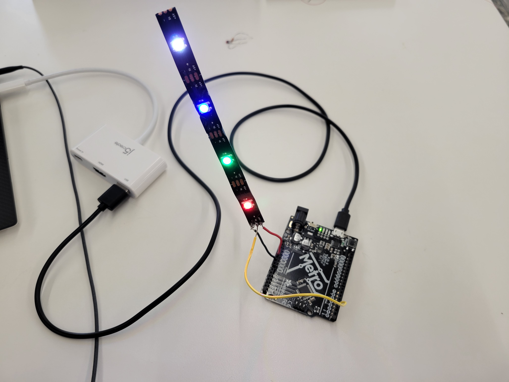
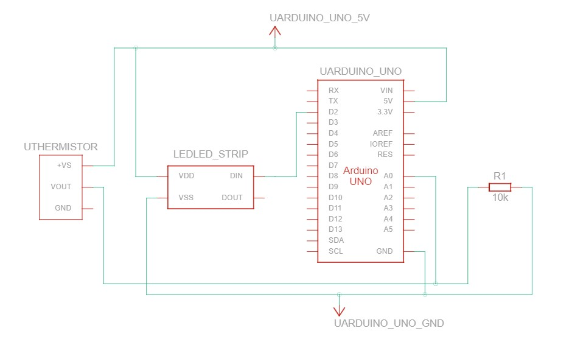

<div class="container-fluid">
### Week 7: Output Devices
For output week, I was fascinated by the individually-addressable LED strips. While these are most well-known in popular culture as "the Tiktok lights" people decorate their rooms with, I wanted to find a more practical application for them. By using these LED strips as indicator lights and pairing it with a thermistor, I could create a thermometer that easily reports if someone has a fever or not.
I first began by figuring out how the LED strips actually work using the FastLED library for the Arduino IDE. Using it, I cut a strip of four LEDs and wrote the following program:
```
#include <FastLED.h>
#define LED_PIN 2
#define NUM_LEDS 4
CRGB leds[NUM_LEDS];
void setup() {
FastLED.addLeds<WS2812, LED_PIN, GRB>(leds, NUM_LEDS);
}
void loop() {
leds[0] = CRGB(255, 0, 0);
FastLED.show();
delay(500);
leds[1] = CRGB(0, 255, 0);
FastLED.show();
delay(500);
leds[2] = CRGB(0, 0, 255);
FastLED.show();
delay(500);
leds[3] = CRGB(255, 255, 255);
FastLED.show();
delay(500);
delay(500);
}
```

This simple program initializes the four LEDs in an array and then assigns them colors in a loop. I then decided to add the thermistor.
I plugged in a thermistor and pulldown resistor to an analog pin and the LED pin to a digital pin, and then wrote an Arduino sketch which takes the input from the thermistor, converts it to Fahrenheit, and then uses Arduino multitasking to check every half second to see if the temperature is above 80 degrees (I lowered the threshold from 99 degrees to make it possible to test this using the body heat from my hands). If it is above the threshold, all LEDs turn green. Otherwise, they're red.
The code and circuit diagram are below.
```
#include <FastLED.h>
#define LED_PIN 2
#define NUM_LEDS 4
CRGB leds[NUM_LEDS];
int ThermistorPin = 0;
int Vo;
float R1 = 10000;
float logR2, R2, T;
float c1 = 1.009249522e-03, c2 = 2.378405444e-04, c3 = 2.019202697e-07;
long previousMillis = 0;
long interval = 500;
void setup() {
// put your setup code here, to run once:
FastLED.addLeds<WS2812, LED_PIN, GRB>(leds, NUM_LEDS);
Serial.begin(9600);
leds[0] = CRGB(255, 255, 255);
FastLED.show();
leds[1] = CRGB(255, 255, 255);
FastLED.show();
leds[2] = CRGB(255, 255, 255);
FastLED.show();
leds[3] = CRGB(255, 255, 255);
FastLED.show();
}
void loop() {
Vo = analogRead(ThermistorPin);
R2 = R1 * (1023.0 / (float)Vo - 1.0);
logR2 = log(R2);
T = (1.0 / (c1 + c2*logR2 + c3*logR2*logR2*logR2));
T = T - 273.15;
T = (T * 9.0)/ 5.0 + 32.0;
unsigned long currentMillis = millis();
if(currentMillis - previousMillis > interval) {
previousMillis = currentMillis;
Serial.print("Temperature: ");
Serial.print(T);
Serial.println(" F");
if (T >= 80.0) {
leds[0] = CRGB(0, 255, 0);
FastLED.show();
leds[1] = CRGB(0, 255, 0);
FastLED.show();
leds[2] = CRGB(0, 255, 0);
FastLED.show();
leds[3] = CRGB(0, 255, 0);
FastLED.show();
}
else {
leds[0] = CRGB(255, 0, 0);
FastLED.show();
leds[1] = CRGB(255, 0, 0);
FastLED.show();
leds[2] = CRGB(255, 0, 0);
FastLED.show();
leds[3] = CRGB(255, 0, 0);
FastLED.show();
}
}
}
```

<img src="circuitgif.gif" width="50%" height="50%">